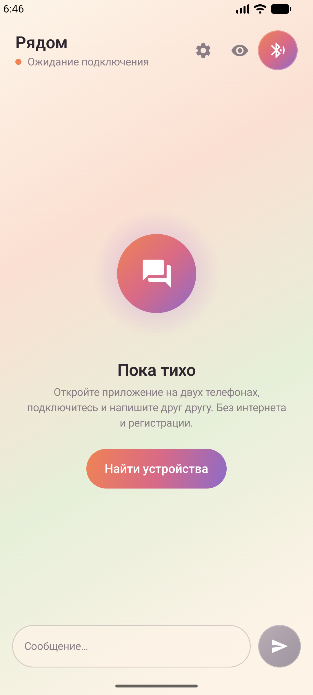
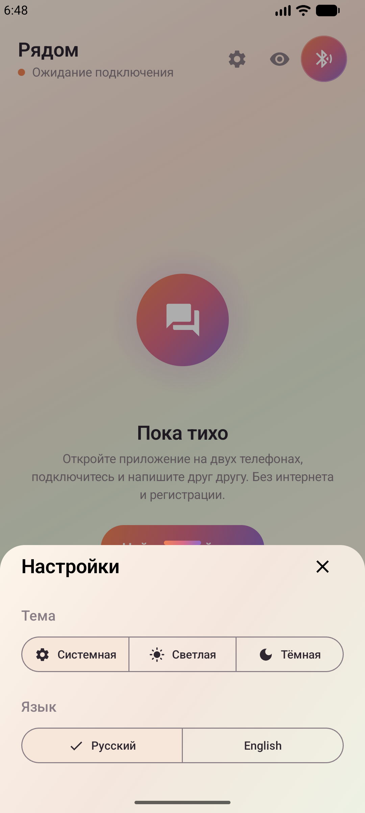
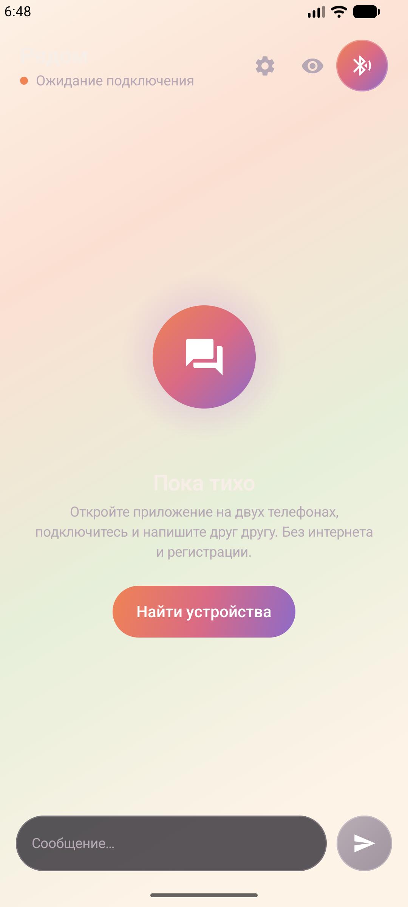
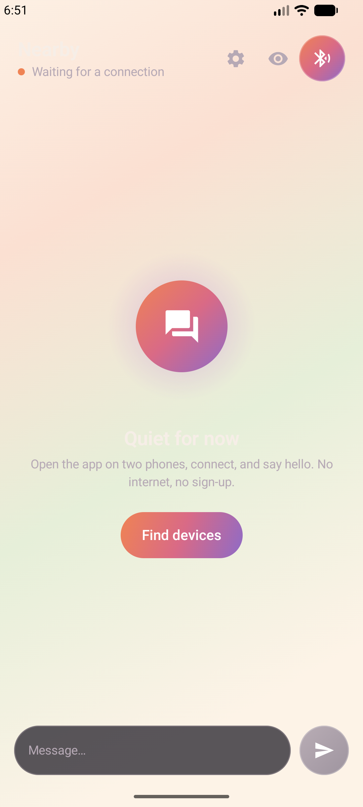

Простой P2P-мессенджер по Bluetooth.
Два телефона, один чат, ноль интернета.
Чат, статус подключения и список устройств в одном bottom sheet.
Ни регистрации, ни логина, ни телефонного номера, ни облака.
Трафик идёт только по радиоканалу Bluetooth между устройствами.
Каждое устройство одновременно слушает входящие подключения и может само стать инициатором — не нужно решать, «кто тут сервер».
«Устройства рядом» (BLUETOOTH_CONNECT / SCAN / ADVERTISE). Проверяются перед каждым вызовом, без кеширования.
Один телефон становится видимым, второй запускает discovery и видит список устройств рядом.
Общий UUID у обоих приложений. При первом контакте система сама покажет диалог сопряжения.
Сообщения — UTF‑8 строки с разделителем \n. Чтение в фоновом корутинном потоке, запись под мьютексом.
| Решение | Транспорт | Сервер | Аккаунт | Дальность |
|---|---|---|---|---|
| Telegram / WhatsApp | Интернет | Да | Да | Весь мир |
| Briar | Bluetooth / Wi‑Fi / Tor | Нет | Да (локальный профиль) | Рядом + сеть |
| Signal / SimpleX | Интернет | Да | Да | Весь мир |
| Bluetooth‑чат из примеров | Bluetooth | Нет | Нет | ~10 м |
| Wi‑Fi Direct / Nearby Connections | Wi‑Fi / BLE | Нет | Нет | ~30–100 м |
| Рядом (наш проект) | Bluetooth Classic | Нет | Нет | ~10 м |
Ниша проекта — не «заменить мессенджер», а закрыть узкий сценарий: быстро, офлайн, без подготовки.
Работает без сети, без SIM, без аккаунта и без согласия на обработку данных. Сообщение не покидает пару устройств.
Не нужно создавать профиль, добавлять контакт, ждать синхронизации и разбираться в onion‑сетях. Открыл — нашёл — написал.
Bluetooth Classic не отключает Wi‑Fi и не мешает интернету на телефоне. Меньше системных диалогов и состояний.
Не «голый сокет», а законченный продукт: дизайн, тёмная тема, разрешения, статусы, ошибки, reconnect, edge‑to‑edge, IME.
Cloud‑мессенджеры работают на любом расстоянии; у нас ~10 м и один собеседник на соединение.
У Signal / Briar — сквозное шифрование. У нас только сопряжение Bluetooth, прикладного шифрования нет.
Сообщения живут в памяти процесса. Нет БД, нет доставки, когда собеседник вышел из зоны.
Нет мультимедиа, групп, пушей, резервных копий и аудита безопасности. Это осознанный MVP, а не платформа.

Светлая тема,
Настройки:
Тёмная тема
English +Medium_Phone_API_37.0. Архивные кадры первой версии: 01–04 в папке screens/. Экран с перепиской на следующем слайде — Compose Preview: соединить два Bluetooth‑устройства на одном эмуляторе невозможно.Тёмный фон получил эффект заставки Gemini: глубокая база и четыре большие мягкие цветовые «облака» — фиолетовое, розовое, бирюзовое и коралловое — медленно движутся по разным орбитам. Центральная иконка светится пульсирующим ореолом, кнопки и «пузыри» сообщений получили градиенты.
Орбиты облаков и фоновая анимация читаются в draw-фазе (Modifier.drawBehind), а не в composition. Иначе infinite-анимация перерисовывает всё дерево 60 раз в секунду — на софтверном GPU это даёт ANR. После правки: 0 дропов кадров за 6 с замера.
Градиентные пузыри из Compose Preview
(тот же код, что рисует сообщения в приложении)
исходных файлов Kotlin
МБ — готовый APK
языка интерфейса
В репозитории: исходный код, P2P-Messenger-debug.apk в корне, README.md и эта презентация со скриншотами.
:app:assembleDebug проходит; на эмуляторе проверены обе темы, оба языка и градиентная анимация (0 дропов кадров). Репозиторий открыт на GitHub и содержит исходники, APK и презентацию.